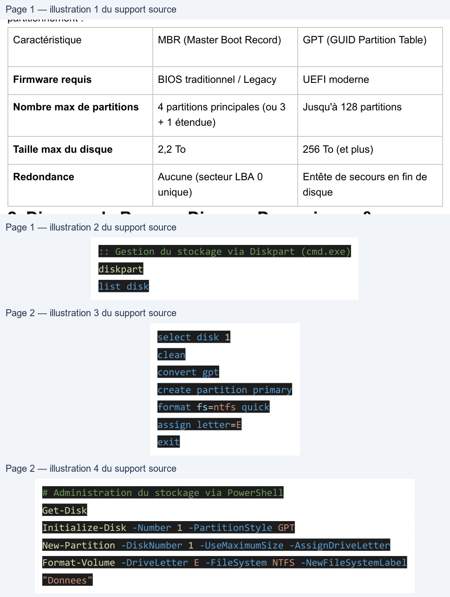

Transcription du document du Drive TSSR. La mise en forme est adaptée au Web ; les compléments IA du portail sont présentés séparément.
Avant de pouvoir utiliser un disque dur, celui-ci doit être initialisé avec une table de
partitionnement :
Caractéristique
MBR (Master Boot Record)
GPT (GUID Partition Table)
Firmware requis
BIOS traditionnel / Legacy
UEFI moderne
Jusqu'à 128 partitions
Nombre max de partitions
4 partitions principales (ou 3
+ 1 étendue)
Taille max du disque
2,2 To
256 To (et plus)
Redondance
Aucune (secteur LBA 0
unique)
Entête de secours en fin de
disque
● Disque de Base : Organisé en partitions principales et étendues.
● Disque Dynamique : Organisé en volumes (simples, agrégés par bandes, miroir/RAID).
● NTFS : Système de fichiers standard Windows supportant les permissions de sécurité
(ACL), la compression et le chiffrement EFS.
● ReFS : Resilient File System, conçu pour maximiser la disponibilité des données et la
résilience aux pannes.
● FAT32 : Format universel mais limité à des fichiers de 4 Go max.
Le stockage se gère via la console diskmgmt.msc, l'outil CLI diskpart ou PowerShell :
:: Gestion du stockage via Diskpart (cmd.exe)
diskpart
list disk
| Caractéristique | MBR (Master Boot Record) | GPT (GUID Partition Table) |
| Firmware requis | BIOS traditionnel / Legacy | UEFI moderne |
| Nombre max de partitions | 4 partitions principales (ou 3 + 1 étendue) | Jusqu'à 128 partitions |
| Taille max du disque | 2 2 To , | 256 To (et plus) |
| Redondance | Aucune (secteur LBA 0 unique) | Entête de secours en fin de disque |
select disk 1
clean
convert gpt
create partition primary
format fs=ntfs quick
assign letter=E
exit
# Administration du stockage via PowerShell
Get-Disk
Initialize-Disk -Number 1 -PartitionStyle GPT
New-Partition -DiskNumber 1 -UseMaximumSize -AssignDriveLetter
Format-Volume -DriveLetter E -FileSystem NTFS -NewFileSystemLabel
"Donnees"
